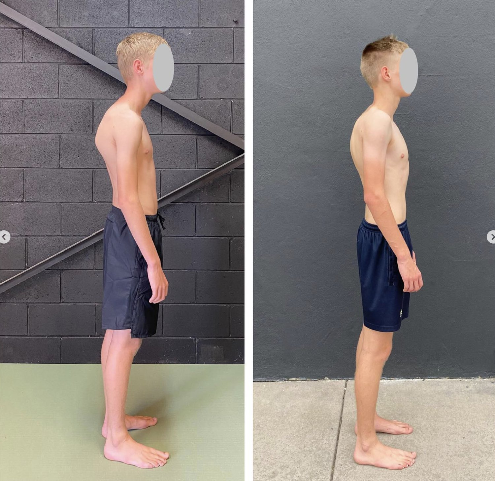
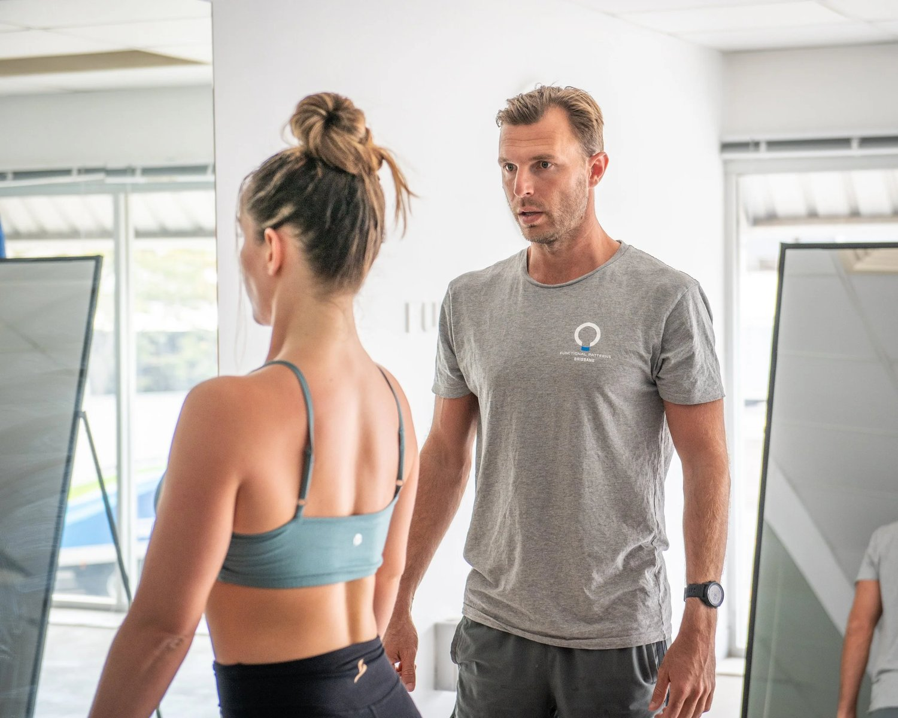

Headaches are a common issue that many people experience, but their root cause often goes unnoticed. A surprising link exists between headaches and posture—specifically, poor posture.
Whether it’s the result of slouching, prolonged sitting, or imbalanced movement patterns, poor posture can create a cascade of problems that lead to pain and headaches. This article explores the connection between movement, posture, and headaches. It focuses on how Functional Patterns (FP) methodology can provide a long-term solution.
Understanding the Connection Between Posture and Headaches
Poor Movement Patterns = Poor Posture
Your posture reflects how your body moves and functions. Poor movement patterns, such as uneven weight distribution, lack of coordination, and overuse of specific muscles, can lead to imbalances in the body. Over time, these imbalances disrupt your posture. A slumped posture or forward head posture becomes the norm, creating strain on your muscles, joints, and nervous system.
Poor Posture = Pain and Headaches
Poor posture places unnecessary stress on the cervical spine (the upper part of the spine in your neck) and surrounding muscles. This strain can lead to cervicogenic headaches—headaches that originate from issues in the neck. Misaligned cervical vertebrae, tight neck muscles, and overburdened shoulders create tension and compress nerves, triggering pain and headaches.
Chronic tension headaches are another common outcome of poor posture. These headaches often stem from myofascial trigger points in the neck and shoulder region, caused by prolonged periods of slouching or improper head posture.

How Functional Patterns Can Help
Functional Patterns is a methodology that addresses the root cause of poor posture by correcting dysfunctional movement patterns. Instead of focusing solely on isolated muscles, FP works to integrate and balance the body’s movement systems to create symmetry, alignment, and functional strength. This allows up to address headaches from bad posture.
Key FP Principles for Posture and Headache Relief
-
Restoring Cervical Spine Alignment Functional Patterns exercises prioritize proper alignment of the cervical spine. Misalignments caused by forward head posture are addressed through movements that restore the natural curves of the spine. This reduces pressure on cervical vertebrae, alleviating neck pain and preventing tension-type headaches.
-
Improving Core Function The core plays a vital role in maintaining good posture. Weak or dysfunctional core muscles can lead to compensations in the neck and shoulders, contributing to pain and headaches. FP integrates the core into functional movements, improving posture and reducing stress on the upper body.
-
Releasing Myofascial Trigger Points FP methodology uses exercises that address tightness in the fascia. This is the connective tissue that surrounds muscles. By releasing myofascial trigger points in the neck and shoulder region, FP reduces chronic tension and alleviates headaches.
-
Balancing the Nervous System Poor posture and dysfunctional movement patterns place unnecessary strain on the nervous system, contributing to pain and discomfort. Functional Patterns exercises aim to create efficient, pain-free movement, reducing nervous system stress and helping prevent poor posture headaches.

Create a strong, functional neck and spine with Functional Patterns.
Common FP Movements to Improve Posture and Reduce Headaches
-
Standing Thoracic Rotations These exercises enhance thoracic mobility and reduce stiffness in the upper back, which can help correct head posture and reduce strain on the cervical spine.
-
Myofascial Release Techniques Using tools like a massage ball or foam roller, FP practitioners target myofascial trigger points in the neck and shoulders to release tension and improve posture.
-
Dynamic Core Integration Functional Patterns emphasizes integrating the core into all movements. Exercises like resisted cable pulls train the core to support good posture, reducing the burden on neck muscles.
-
Cervical Spine Alignment Drills These drills focus on bringing the head into proper alignment with the spine, relieving strain on the cervical vertebrae and neck muscles.
-
Functional, integrated Movements These movements align with how the human body is supposed to move. They encourage strength, alignment and whole-body integration. This takes excessive pressure off the neck and cervical spine.

Practical Tips for Preventing Headaches Through Better Posture
-
Address Your Movement Patterns Invest in a functional movement assessment to identify and correct imbalances that contribute to poor posture.
-
Incorporate FP-Based Exercises Practice FP movements regularly to retrain your body to move in a more balanced and efficient way.
-
Break the Habit of Slouching Be mindful of your posture throughout the day. Stand up straight, engage your core, and avoid letting your head drift forward.
-
Eat an Anti-Inflammatory Diet Bloating plays a role in poor posture and therefore contributes to headaches.
-
Seek Professional Guidance An FP practitioner can design a personalised program to help you correct posture issues and eliminate headaches. This is a very individual process and cookie-cutter protocols do not work.

The Benefits of Correcting Posture with Functional Patterns
By addressing the underlying causes of poor posture, Functional Patterns doesn’t just improve posture—it transforms your overall health. Correcting posture can:
-
Alleviate chronic tension headaches.
-
Relieve neck pain and muscle tension.
-
Improve range of motion and functional strength.
-
Reduce the risk of long-term health problems associated with poor posture, such as spinal degeneration.
-
Provide Natural lumbar support from within. This saves the money and hassle of relying on external posture support trends.
-
Enhance your quality of life by promoting pain-free, efficient movement.

Final Thoughts
If you’re struggling with headaches and posture issues, it’s time to look beyond temporary fixes and address the root cause. Poor movement patterns lead to poor posture, which can result in tension, pain, and headaches. Functional Patterns provides a holistic approach to correcting posture by retraining the body to move efficiently and symmetrically. With FP, you can improve your posture, eliminate pain, and prevent headaches for good.